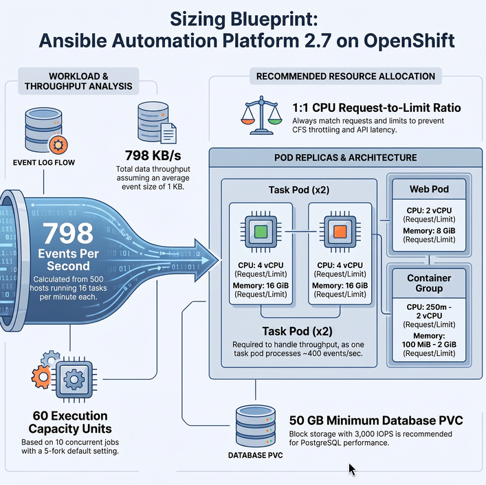

Performance Considerations for OpenShift Deployments
In the previous section we discussed how to calculate node size. The following default parameters and OCP-specific factors help with planning control and execution capacity.

| The Tuning of the parameters needs careful consideration and should be done only after measuring the actual workload and performance of the system. The default values are based on typical workloads and may not be optimal for all environments. |
Default Parameters
The following parameters are unlikely to need changes unless you have a specific reason and measured value:
| Parameter | Default value |
|---|---|
Facts size per host |
50 KB |
Size per event |
1 KB |
Events per task |
6–10 |
Memory per fork (execution nodes) |
100 MB |
Forks per CPU (execution nodes) |
4 |
Capacity Adjustment |
1.0 (select highest value) |
Execution Environment average size |
450 MB |
Automation Controller event throughput (per task pod) |
~400 events/sec |
Automation Controller RAM per event fork |
10 KB |
Automation Controller CPU per event fork |
0.0001 |
Concurrent API calls per controller web pod |
100 (up to 300 allowed) |
Controller/execution base job capacity per job run |
1 |
| In an OCP deployment, "Memory per fork" applies to remote execution nodes only. Container Group pods do not use the fork capacity formula — set fork limits directly in the pod spec or at the job template level. |
Factors That Vary Across Environments
-
Number of Ansible managed hosts/nodes.
-
Number of jobs per host per day.
-
Tasks run per playbook or job including imported roles/tasks/playbooks.
-
Whether jobs run for a specific time period or 24×7.
CPU Throttling Prevention
In OpenShift Container Platform, setting a CPU limit without an equal CPU request causes the kernel CFS scheduler to throttle the container even when the node has spare CPU capacity. This throttling directly increases API latency and slows job event processing.
Rule: always set CPU requests equal to CPU limits for all AAP pods.
task_resource_requirements:
requests:
cpu: "4"
memory: 16Gi
limits:
cpu: "4" # must equal requests.cpu to avoid CFS throttling
memory: 16GiMonitor CPU throttling with the Prometheus metric:
container_cpu_cfs_throttled_seconds_totalIf this metric is non-zero and rising, increase the CPU request and the matching limit on the affected pod. Do not raise only the limit — that is the source of the throttling.
Manage Live Event Streams to the UI
The automation controller UI receives real-time job updates over WebSocket connections. Under heavy concurrent workloads, live event streaming increases load on the controller service.
Disable live streaming
Set UI_LIVE_UPDATES_ENABLED to false in the automation controller configuration. When disabled, the job detail page no longer auto-updates as events arrive — users must refresh manually to see current status.
extra_settings:
- setting: UI_LIVE_UPDATES_ENABLED
value: "false"Tune event rate and size
The following settings control the volume of event data sent to the UI. Reducing these values lowers controller load at the cost of less granular live output:
| Setting | Default | Effect |
|---|---|---|
|
1024 |
Maximum bytes of stdout displayed per event in the UI |
|
30 |
Maximum events per second sent over WebSocket per job |
|
1 |
Time events are buffered before being sent to the UI |
Job Type Impact on Capacity
Not all jobs consume the same controller capacity. Plan your sizing based on the actual workload mix:
| Job type | Capacity impact | Notes |
|---|---|---|
Standard jobs |
1 fork = 1 capacity unit |
The baseline — most playbook runs |
Workflow jobs |
Low on controller |
Orchestrate child jobs; controller overhead is minimal but each child job consumes its own capacity |
Sliced jobs |
1 unit per slice |
A sliced job with 5 slices consumes 5 capacity units simultaneously |
Bulk jobs |
Sum of all child jobs |
High total capacity; schedule during low-traffic windows |
System jobs |
Variable |
Fact cleanup, project sync, inventory sync — compete with user jobs for task pod capacity |
Project synchronizations and inventory syncs run as system jobs. During heavy project sync periods, reduce the number of concurrent jobs or schedule syncs during off-peak hours to avoid starving user workloads.
OpenShift-Specific Performance Considerations
Horizontal Pod Autoscaling
The web pod handles all UI and REST API traffic and scales horizontally — increase the replicas field in the AutomationController CR to add more web pod replicas. The task pod processes job events and scales vertically — increase its CPU and memory requests and limits to raise event throughput. When scaling replicas, also raise web_resource_requirements if API latency is the bottleneck.
Resource Quotas and LimitRanges
Ensure the AAP namespace does not have a ResourceQuota or LimitRange that caps pod memory below your sizing requirements. Quota exhaustion causes pod scheduling failures that appear as Pending pod status.
oc describe quota -n aap
oc describe limitrange -n aapStorageClass and IOPS
Database and project storage performance on OCP depends on the underlying StorageClass. For production deployments, use a StorageClass backed by block storage. Provision at least 3,000 IOPS for the PostgreSQL PVC. Avoid ReadWriteOnce PVCs if you plan to run multiple hub or controller replicas — those require ReadWriteMany.
WebSocket Load Balancing
When running multiple web pod replicas, WebSocket connections require sticky sessions — the same client must be routed to the same pod for the life of the connection. Configure source-based load balancing on the OpenShift Route:
oc annotate route aap-controller \
haproxy.router.openshift.io/balance=sourceThe source algorithm pins a client to the same backend pod based on source IP, maintaining WebSocket session continuity across reconnects.
ImagePullSecrets for Secured Registries
If your Execution Environments are stored in a private registry other than the default registry.redhat.io, configure an imagePullSecret in the AutomationController CR or in the pod spec override of the Container Group:
oc create secret docker-registry my-registry-secret \
--docker-server=<registry-host> \
--docker-username=<username> \
--docker-password=<password> \
-n aapspec:
image_pull_secrets:
- name: my-registry-secretContainer Group Pod Overhead
Each Container Group job pod incurs Kubernetes scheduling overhead (approximately 2–5 seconds for pod start). For very short-lived playbooks, a persistent remote execution node provides better throughput than Container Groups, because the receptor connection is always up and there is no scheduling delay per job.
Key Performance Indicators
Monitor these metrics to determine when scaling or tuning is needed:
| Indicator | Signal | Action |
|---|---|---|
High API latency |
Response time > 2 seconds for UI or API calls |
Scale web pod replicas; check CPU throttling; check database connection pool |
High CPU utilization |
Task pod CPU sustained > 80% |
Increase task pod CPU requests and limits equally to avoid throttling |
502 Bad Gateway |
Returned by platform gateway |
Scale gateway replicas; check backend pod health |
503 Service Unavailable |
Returned by automation controller |
Scale web pod replicas; check if task pod is overloaded |
429 Too Many Requests |
Returned by platform gateway |
Rate-limiting triggered; use token-based API access; reduce polling frequency in clients |
|
Prometheus metric |
Set CPU |
OpenShift Route Timeout
Long-running API requests — such as job launch polling or large inventory syncs — can exceed the default HAProxy Route timeout of 30 seconds, causing the client to receive a 504 error even though the backend is still working. Increase the timeout with the following annotation on each AAP Route:
oc annotate route aap-controller \
haproxy.router.openshift.io/timeout=300sApply to each route that clients access (controller, hub, EDA gateway). Clients should also configure a matching or longer timeout on their side to avoid premature disconnection.
Helpful Formulas
Total Jobs = (Number of Hosts × Jobs per Host per Day) ÷ Hosts Required per Job
Job Duration = Job Duration per Host × CEILING(Hosts per Job ÷ Parallel Forks)
Workload Utilization = (Jobs per Day × Job Duration) ÷ Automation Hours per Day
Polling Load = (Jobs per Day × Job Duration) ÷ Polling Interval
API Utilization = (API Calls per Day × API Call Duration) ÷ Automation Hours per Day
Database size for facts = Facts size per host × number of hosts / 1024
Database size for jobs = number of hosts × jobs per host per day × number of days
to keep the data × number of events × event size / 1024Database RAM and CPU should be sized similarly to the task pod or Execution Plane node, whichever is higher.